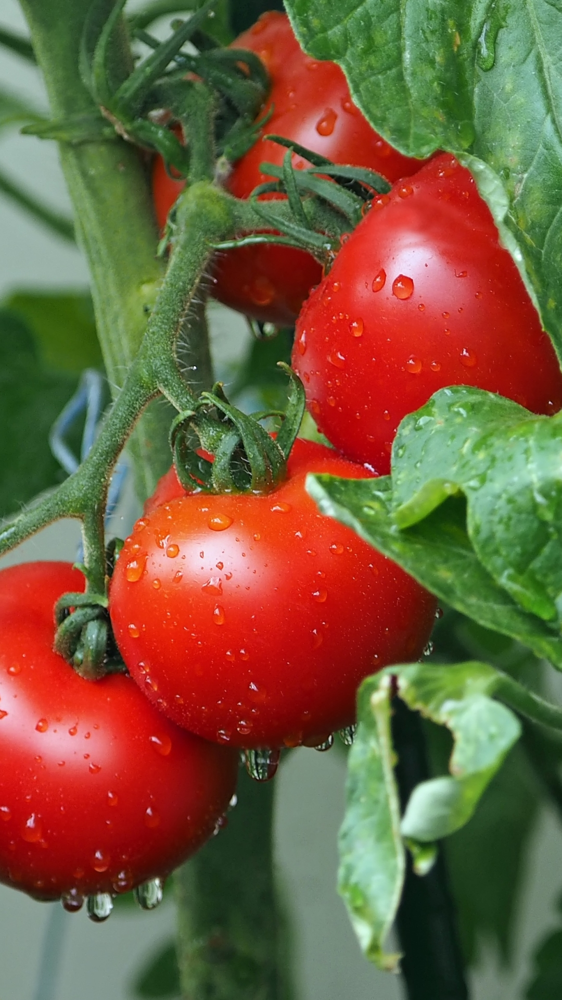
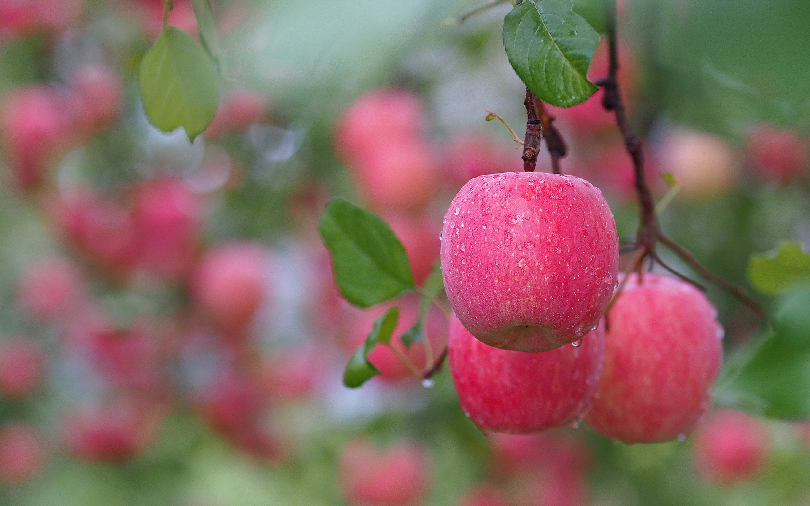
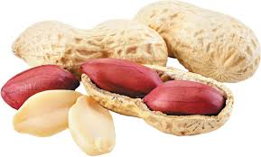
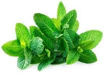

Horticultural Crops & Their Uses
🌺 Flowers
- Ornamental decoration
- Perfume production
- Aromatherapy
- Wedding ceremonies
- Natural dyes

🥦 Vegetables
- Nutritional food source
- Pickling & preservation
- Juice extraction
- Animal feed
- Medicinal purposes

🍎 Fruits
- Fresh consumption
- Jam & jelly production
- Alcoholic beverages
- Vitamin sources
- Cosmetic ingredients

🥜 Nuts
- Healthy snacks
- Nut butter production
- Bakery ingredients
- Oil extraction
- Protein supplements

🌿 Plants
- Air purification
- Soil conservation
- Biofuel production
- Medicinal herbs
- Landscaping